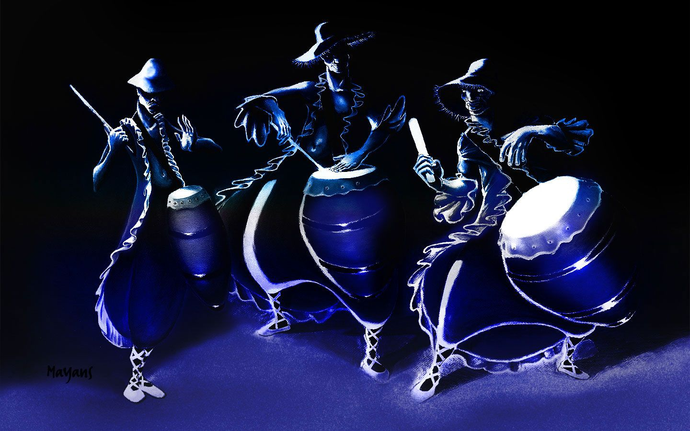

Es el nombre genérico que reciben diferentes danzas de origen africano en Uruguay que toma fuerza a finales del siglo XVIII, y nace de la conjunción de los más de veinte pueblos africanos que fueron traídos como esclavos a esta región del cono sur. Cada uno de éstos tenía su idioma, su forma de ser, ver y sentir, su cultura, sus danzas y cantos de diferente naturaleza: sacro o profano, festivo o luctuoso, etc.
El candombe fue la danza y la expresión musical religiosa más importante y significativa del colectivo afro, siendo hoy en día, una de las expresiones musicales más elocuentes que tiene el Uruguay.
Diferencias entre el candombe uruguayo y el candombe porteño.
Candombe uruguayo:
- Es reconocido por la UNESCO como patrimonio cultural de la humanidad.
- Es el más difundido y visible porque siempre se hizo en la calle.
- No es cantado, solo instrumental.
- Se toca con 3 tambores: chico, repique y piano.
- Los tambores se tensan con fuego.
- Se toca con palo y manos.
- Se toca de pie.
Candombe porteño:
- Se mantuvo siempre puertas adentro de las familias.
- Es cantado, no solo tambor.
- Sus cantos están en castellano y en lenguas africanas, de las que derivó mucho del lunfardo.
- Los tambores son distintos, se templan con fuego pero también de otras maneras.
- Se toca con dos tambores: llamador o tumba o base y respondedor o repiqueteador. También se utiliza bongó, claves y otros instrumentos.
- Se toca solo con las manos, por eso el volumen es menor, lo que permite cantar.
- Se toca sentado.
Instrumentos: tambores (chico, piano y repique).
En la actualidad, en Uruguay, el mayor exponente del candombe es Ruben Rada. El “Negro” como se lo conoce actualmente es un pionero de la música popular uruguaya. Nació en 1943 en el barrio Palermo de Montevideo. Creció como fan de los Beatles, Ray Charles,Louis Armstrong y Carlos Gardel. Uno de sus temas más conocidos es justamente “Candombe para Gardel”
